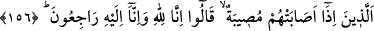

talan, helâk ve zarar veya devlet başkanının el koyması gibi sebeblerle mallarınızı
azaltarak; savaş, ölüm, hastalık ve ihtiyarlık gibi nedenlerle nefislerinizi sınayarak;
soğuk, fırtına, çekirge gibi âfetlerle veya cihâdla meşgûliyetinizden dolayı arâzîlerinizi
işleyememek sûretiyle ürünlerinizi eksilterek imtihan ederiz.
İnsanların başına gelenler Allah Teâlâ’nın onları korumasına nisbetle bin kat daha az
olduğu için “biraz korku, biraz açlık v.s.” gibi ifâdeler kullanılmıştır.
Mü’minlerin kendilerini hazırlayıp şartlandırmaları ve başlarına gelince de kolaylıkla
sabretmeleri için Allah Teâlâ, “deneme” mâhiyetinde bu gibi hâdiselerin vukû
bulacağını onlara önceden haber vermiştir. Çünkü ânîden meydana gelen beklenmedik
bir duruma sabır, vukû bulacağı bilinene sabretmekten daha zordur.
İmam Şâfiî’nin şöyle dediği nakledilir: Âyette geçen korku, Allah korkusu; açlık,
ramazan orucu; mallardan noksanlık, zekât ve sadakalar; nefislerden noksanlık,
hastalıklar ve ürünlerden noksanlık ise çocukların ölmesidir. Hz. Peygamber (s.a.) şöyle
buyurmuştur:
“Bir kulun çocuğu ölünce Allah Teâlâ meleklere: “Kulumun çocuğunun canını mı
aldınız?” diye sorar. Melekler de: “Evet” derler. Tekrar Allah Teâlâ: “Siz onun
kalbinin meyvesini mi kabzettiniz?” der, onlar da: “Evet” derler. Allah Teâlâ: “Siz
onun gönlünün meyvesini alınca o ne söyledi?” buyurur. Melekler: “Ya Rabbi o sana
hamdetti ve: “Biz Allah için varız ve biz sonunda O’na döneceğiz.” (el-Bakara,
2/156) dedi, diye karşılık verirler. Bunun üzerine Allah Teâlâ: “Kulum için cennette
bir ev yapın ve ismini “beytü’l-hamd” (hamd evi) koyun.” buyurur.[41]
Mârifet ehlinden biri şöyle demiştir: “Gayb âleminin istekleri mal, nefis, yakın
akraba, kalb ve rûhla ilgili olur. Ona mal ile karşılık veren, kurtuluşa erer. Nefsini yok
eden yüksek derecelere ulaşır. Yakın akrabası ölüp sabreden, ölenlerin yerine daha çok
yakın akraba bulur. Rûhunu bu yolda Allah’a veren ise kesintisiz bir vuslata kavuşur.”
“Belâlara ve musîbetlere sabredenleri müjdele!” Çünkü sabır, peygamberlerin ve
velî kulların en mühim hasletlerinden biridir. Sevâbı büyük, fazîletli ve fakat zor bir
iştir. Böyle bir vasfa sahip olan kimsenin herkes tarafından müjdelenmesi hakkıdır. Bu
sebeple âyetteki: “Müjdele!” emri, hem Peygamberimiz’e (s.a.) hem de
müjdeleyebilecek herkesedir.
156. O sabredenler, kendilerine bir belâ geldiği zaman: Biz Allah’ın kullarıyız ve
biz O’na döneceğiz, derler.
“İsâbet”, “Hatâ”nın karşıtı olan bir kelimedir. “Musîbet” insanın başına gelen hoşa
gitmeyen bir durumdur. Bu konuda Peygamber Efendimiz (s.a.): “Mü’mine eziyet veren
her şey, onun için musîbettir.”[42] buyurur. Kelimenin aslı, atılan okun yerine isâbet